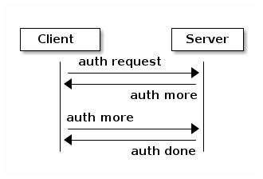
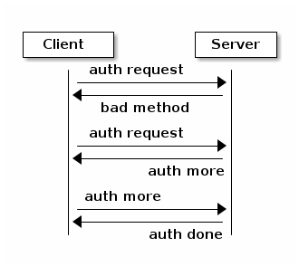
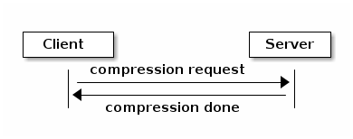
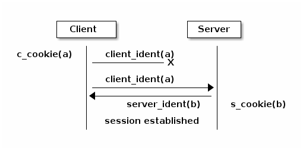
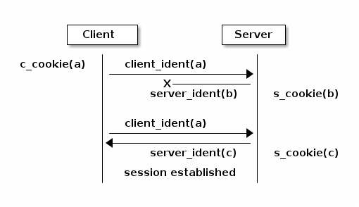
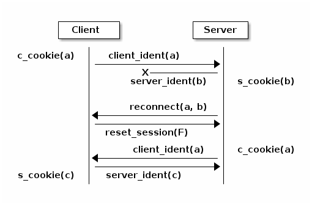
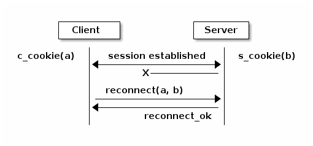
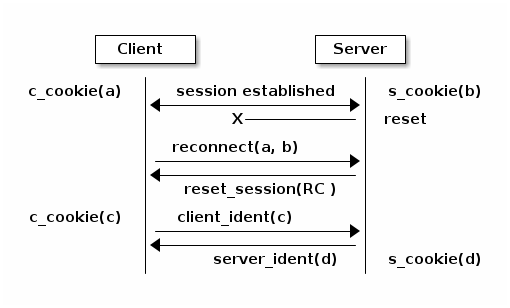
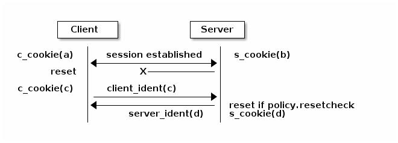
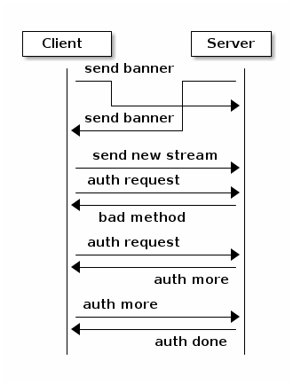

Notice
This document is for a development version of Ceph.
msgr2 protocol (msgr2.0 and msgr2.1)
This is a revision of the legacy Ceph on-wire protocol that was implemented by the SimpleMessenger. It addresses performance and security issues.
Goals
This protocol revision has several goals relative to the original protocol:
Flexible handshaking. The original protocol did not have a sufficiently flexible protocol negotiation that allows for features that were not required.
Encryption. We will incorporate encryption over the wire.
Performance. We would like to provide for protocol features (e.g., padding) that keep computation and memory copies out of the fast path where possible.
Signing. We will allow for traffic to be signed (but not necessarily encrypted). This is not implemented.
Definitions
client (C): the party initiating a (TCP) connection
server (S): the party accepting a (TCP) connection
connection: an instance of a (TCP) connection between two processes.
entity: a ceph entity instantiation, e.g. ‘osd.0’. each entity has one or more unique entity_addr_t’s by virtue of the ‘nonce’ field, which is typically a pid or random value.
session: a stateful session between two entities in which message exchange is ordered and lossless. A session might span multiple connections if there is an interruption (TCP connection disconnect).
frame: a discrete message sent between the peers. Each frame consists of a tag (type code), payload, and (if signing or encryption is enabled) some other fields. See below for the structure.
tag: a type code associated with a frame. The tag determines the structure of the payload.
Phases
A connection has four distinct phases:
banner
authentication frame exchange
message flow handshake frame exchange
message frame exchange
Frame format
After the banners are exchanged, all further communication happens in frames. The exact format of the frame depends on the connection mode (msgr2.0-crc, msgr2.0-secure, msgr2.1-crc or msgr2.1-secure). All connections start in crc mode (either msgr2.0-crc or msgr2.1-crc, depending on peer_supported_features from the banner).
Each frame has a 32-byte preamble:
__u8 tag
__u8 number of segments
{
__le32 segment length
__le16 segment alignment
} * 4
__u8 flags
reserved (1 byte)
__le32 preamble crc
An empty frame has one empty segment. A non-empty frame can have between one and four segments, all segments except the last may be empty.
If there are less than four segments, unused (trailing) segment length and segment alignment fields are zeroed.
### Currently supported flags
FRAME_EARLY_DATA_COMPRESSED (see Post-compression frame format)
The reserved bytes are zeroed.
The preamble checksum is CRC32-C. It covers everything up to itself (28 bytes) and is calculated and verified irrespective of the connection mode (i.e. even if the frame is encrypted).
### msgr2.0-crc mode
A msgr2.0-crc frame has the form:
preamble (32 bytes)
{
segment payload
} * number of segments
epilogue (17 bytes)
where epilogue is:
__u8 late_flags
{
__le32 segment crc
} * 4
late_flags is used for frame abortion. After transmitting the preamble and the first segment, the sender can fill the remaining segments with zeros and set a flag to indicate that the receiver must drop the frame. This allows the sender to avoid extra buffering when a frame that is being put on the wire is revoked (i.e. yanked out of the messenger): payload buffers can be unpinned and handed back to the user immediately, without making a copy or blocking until the whole frame is transmitted. Currently this is used only by the kernel client, see ceph_msg_revoke().
The segment checksum is CRC32-C. For “used” empty segments, it is set to (__le32)-1. For unused (trailing) segments, it is zeroed.
The crcs are calculated just to protect against bit errors. No authenticity guarantees are provided, unlike in msgr1 which attempted to provide some authenticity guarantee by optionally signing segment lengths and crcs with the session key.
Issues:
As part of introducing a structure for a generic frame with variable number of segments suitable for both control and message frames, msgr2.0 moved the crc of the first segment of the message frame (ceph_msg_header2) into the epilogue.
As a result, ceph_msg_header2 can no longer be safely interpreted before the whole frame is read off the wire. This is a regression from msgr1, because in order to scatter the payload directly into user-provided buffers and thus avoid extra buffering and copying when receiving message frames, ceph_msg_header2 must be available in advance -- it stores the transaction id which the user buffers are keyed on. The implementation has to choose between forgoing this optimization or acting on an unverified segment.
late_flags is not covered by any crc. Since it stores the abort flag, a single bit flip can result in a completed frame being dropped (causing the sender to hang waiting for a reply) or, worse, in an aborted frame with garbage segment payloads being dispatched.
This was the case with msgr1 and got carried over to msgr2.0.
### msgr2.1-crc mode
Differences from msgr2.0-crc:
The crc of the first segment is stored at the end of the first segment, not in the epilogue. The epilogue stores up to three crcs, not up to four.
If the first segment is empty, (__le32)-1 crc is not generated.
The epilogue is generated only if the frame has more than one segment (i.e. at least one of second to fourth segments is not empty). Rationale: If the frame has only one segment, it cannot be aborted and there are no crcs to store in the epilogue.
Unchecksummed late_flags is replaced with late_status which builds in bit error detection by using a 4-bit nibble per flag and two code words that are Hamming Distance = 4 apart (and not all zeros or ones). This comes at the expense of having only one reserved flag, of course.
Some example frames:
A 0+0+0+0 frame (empty, no epilogue):
preamble (32 bytes)
A 20+0+0+0 frame (no epilogue):
preamble (32 bytes) segment1 payload (20 bytes) __le32 segment1 crc
A 0+70+0+0 frame:
preamble (32 bytes) segment2 payload (70 bytes) epilogue (13 bytes)
A 20+70+0+350 frame:
preamble (32 bytes) segment1 payload (20 bytes) __le32 segment1 crc segment2 payload (70 bytes) segment4 payload (350 bytes) epilogue (13 bytes)
where epilogue is:
__u8 late_status
{
__le32 segment crc
} * 3
Hello
TAG_HELLO: client->server and server->client:
__u8 entity_type entity_addr_t peer_socket_address
We immediately share our entity type and the address of the peer (which can be useful for detecting our effective IP address, especially in the presence of NAT).
Authentication
TAG_AUTH_REQUEST: client->server:
__le32 method; // CEPH_AUTH_{NONE, CEPHX, ...} __le32 num_preferred_modes; list<__le32> mode // CEPH_CON_MODE_* method specific payload
TAG_AUTH_BAD_METHOD server -> client: reject client-selected auth method:
__le32 method __le32 negative error result code __le32 num_methods list<__le32> allowed_methods // CEPH_AUTH_{NONE, CEPHX, ...} __le32 num_modes list<__le32> allowed_modes // CEPH_CON_MODE_*
Returns the attempted auth method, and error code (-EOPNOTSUPP if the method is unsupported), and the list of allowed authentication methods.
TAG_AUTH_REPLY_MORE: server->client:
__le32 len; method specific payload
TAG_AUTH_REQUEST_MORE: client->server:
__le32 len; method specific payload
TAG_AUTH_DONE: (server->client):
__le64 global_id __le32 connection mode // CEPH_CON_MODE_* method specific payload
The server is the one to decide authentication has completed and what the final connection mode will be.
Example of authentication phase interaction when the client uses an allowed authentication method:

Example of authentication phase interaction when the client uses a forbidden authentication method as the first attempt:

Post-auth frame format
Depending on the negotiated connection mode from TAG_AUTH_DONE, the connection either stays in crc mode or switches to the corresponding secure mode (msgr2.0-secure or msgr2.1-secure).
### msgr2.0-secure mode
A msgr2.0-secure frame has the form:
{
preamble (32 bytes)
{
segment payload
zero padding (out to 16 bytes)
} * number of segments
epilogue (16 bytes)
} ^ AES-128-GCM cipher
auth tag (16 bytes)
where epilogue is:
__u8 late_flags
zero padding (15 bytes)
late_flags has the same meaning as in msgr2.0-crc mode.
Each segment and the epilogue are zero padded out to 16 bytes. Technically, GCM doesn’t require any padding because Counter mode (the C in GCM) essentially turns a block cipher into a stream cipher. But, if the overall input length is not a multiple of 16 bytes, some implicit zero padding would occur internally because GHASH function used by GCM for generating auth tags only works on 16-byte blocks.
Issues:
The sender encrypts the whole frame using a single nonce and generating a single auth tag. Because segment lengths are stored in the preamble, the receiver has no choice but to decrypt and interpret the preamble without verifying the auth tag -- it can’t even tell how much to read off the wire to get the auth tag otherwise! This creates a decryption oracle, which, in conjunction with Counter mode malleability, could lead to recovery of sensitive information.
This issue extends to the first segment of the message frame as well. As in msgr2.0-crc mode, ceph_msg_header2 cannot be safely interpreted before the whole frame is read off the wire.
Deterministic nonce construction with a 4-byte counter field followed by an 8-byte fixed field is used. The initial values are taken from the connection secret -- a random byte string generated during the authentication phase. Because the counter field is only four bytes long, it can wrap and then repeat in under a day, leading to GCM nonce reuse and therefore a potential complete loss of both authenticity and confidentiality for the connection. This was addressed by disconnecting before the counter repeats (CVE-2020-1759).
### msgr2.1-secure mode
Differences from msgr2.0-secure:
The preamble, the first segment and the rest of the frame are encrypted separately, using separate nonces and generating separate auth tags. This gets rid of unverified plaintext use and keeps msgr2.1-secure mode close to msgr2.1-crc mode, allowing the implementation to receive message frames in a similar fashion (little to no buffering, same scatter/gather logic, etc).
In order to reduce the number of en/decryption operations per frame, the preamble is grown by a fixed size inline buffer (48 bytes) that the first segment is inlined into, either fully or partially. The preamble auth tag covers both the preamble and the inline buffer, so if the first segment is small enough to be fully inlined, it becomes available after a single decryption operation.
As in msgr2.1-crc mode, the epilogue is generated only if the frame has more than one segment. The rationale is even stronger, as it would require an extra en/decryption operation.
For consistency with msgr2.1-crc mode, late_flags is replaced with late_status (the built-in bit error detection isn’t really needed in secure mode).
In accordance with NIST Recommendation for GCM, deterministic nonce construction with a 4-byte fixed field followed by an 8-byte counter field is used. An 8-byte counter field should never repeat but the nonce reuse protection put in place for msgr2.0-secure mode is still there.
The initial values are the same as in msgr2.0-secure mode.
As in msgr2.0-secure mode, each segment is zero padded out to 16 bytes. If the first segment is fully inlined, its padding goes to the inline buffer. Otherwise, the padding is on the remainder. The corollary to this is that the inline buffer is consumed in 16-byte chunks.
The unused portion of the inline buffer is zeroed.
Some example frames:
A 0+0+0+0 frame (empty, nothing to inline, no epilogue):
{ preamble (32 bytes) zero padding (48 bytes) } ^ AES-128-GCM cipher auth tag (16 bytes)
A 20+0+0+0 frame (first segment fully inlined, no epilogue):
{ preamble (32 bytes) segment1 payload (20 bytes) zero padding (28 bytes) } ^ AES-128-GCM cipher auth tag (16 bytes)
A 0+70+0+0 frame (nothing to inline):
{ preamble (32 bytes) zero padding (48 bytes) } ^ AES-128-GCM cipher auth tag (16 bytes) { segment2 payload (70 bytes) zero padding (10 bytes) epilogue (16 bytes) } ^ AES-128-GCM cipher auth tag (16 bytes)
A 20+70+0+350 frame (first segment fully inlined):
{ preamble (32 bytes) segment1 payload (20 bytes) zero padding (28 bytes) } ^ AES-128-GCM cipher auth tag (16 bytes) { segment2 payload (70 bytes) zero padding (10 bytes) segment4 payload (350 bytes) zero padding (2 bytes) epilogue (16 bytes) } ^ AES-128-GCM cipher auth tag (16 bytes)
A 105+0+0+0 frame (first segment partially inlined, no epilogue):
{ preamble (32 bytes) segment1 payload (48 bytes) } ^ AES-128-GCM cipher auth tag (16 bytes) { segment1 payload remainder (57 bytes) zero padding (7 bytes) } ^ AES-128-GCM cipher auth tag (16 bytes)
A 105+70+0+350 frame (first segment partially inlined):
{ preamble (32 bytes) segment1 payload (48 bytes) } ^ AES-128-GCM cipher auth tag (16 bytes) { segment1 payload remainder (57 bytes) zero padding (7 bytes) } ^ AES-128-GCM cipher auth tag (16 bytes) { segment2 payload (70 bytes) zero padding (10 bytes) segment4 payload (350 bytes) zero padding (2 bytes) epilogue (16 bytes) } ^ AES-128-GCM cipher auth tag (16 bytes)
where epilogue is:
__u8 late_status
zero padding (15 bytes)
late_status has the same meaning as in msgr2.1-crc mode.
Compression
Compression handshake is implemented using msgr2 feature-based handshaking. In this phase, the client will indicate the server if on-wire-compression can be used for message transmitting, in addition to the list of supported compression methods. If on-wire-compression is enabled for both client and server, the server will choose a compression method based on client’s request and its’ own preferences. Once the handshake is completed, both peers have setup their compression handlers (if desired).
TAG_COMPRESSION_REQUEST (client->server): declares compression capabilities and requirements:
bool is_compress std::vector<uint32_t> preferred_methods
if the client identifies that both peers support compression feature, it initiates the handshake.
is_compress flag indicates whether the client’s configuration is to use compression.
preferred_methods is a list of compression algorithms that are supported by the client.
TAG_COMPRESSION_DONE (server->client) : determines on compression settings:
bool is_compress uint32_t method
the server determines whether compression is possible according to the configuration.
if it is possible, it will pick the most prioritized compression method that is also supported by the client.
if none exists, it will determine that session between the peers will be handled without compression.

# msgr2.x-secure mode
Combining compression with encryption introduces security implications. Compression will not be possible when using secure mode, unless configured specifically by an admin.
Post-compression frame format
Depending on the negotiated connection mode from TAG_COMPRESSION_DONE, the connection is able to accept/send compressed frames or process all frames as decompressed.
# msgr2.x-force mode
All subsequent frames that will be sent via the connection will be compressed if compression requirements are met (e.g, the frames size).
For compressed frames, the sending peer will enable the FRAME_EARLY_DATA_COMPRESSED flag, thus allowing the accepting peer to detect it and decompress the frame.
# msgr2.x-none mode
FRAME_EARLY_DATA_COMPRESSED flag will be disabled in preamble.
Message flow handshake
In this phase the peers identify each other and (if desired) reconnect to an established session.
TAG_CLIENT_IDENT (client->server): identify ourselves:
__le32 num_addrs entity_addrvec_t*num_addrs entity addrs entity_addr_t target entity addr __le64 gid (numeric part of osd.0, client.123456, ...) __le64 global_seq __le64 features supported (CEPH_FEATURE_* bitmask) __le64 features required (CEPH_FEATURE_* bitmask) __le64 flags (CEPH_MSG_CONNECT_* bitmask) __le64 cookie
client will send first, server will reply with same. if this is a new session, the client and server can proceed to the message exchange.
the target addr is who the client is trying to connect to, so that the server side can close the connection if the client is talking to the wrong daemon.
type.gid (entity_name_t) is set here, by combining the type shared in the hello frame with the gid here. this means we don’t need it in the header of every message. it also means that we can’t send messages “from” other entity_name_t’s. the current implementations set this at the top of _send_message etc so this shouldn’t break any existing functionality. implementation will likely want to mask this against what the authenticated credential allows.
cookie is the client cookie used to identify a session, and can be used to reconnect to an existing session.
we’ve dropped the ‘protocol_version’ field from msgr1
TAG_IDENT_MISSING_FEATURES (server->client): complain about a TAG_IDENT with too few features:
__le64 features we require that the peer didn't advertise
TAG_SERVER_IDENT (server->client): accept client ident and identify server:
__le32 num_addrs entity_addrvec_t*num_addrs entity addrs __le64 gid (numeric part of osd.0, client.123456, ...) __le64 global_seq __le64 features supported (CEPH_FEATURE_* bitmask) __le64 features required (CEPH_FEATURE_* bitmask) __le64 flags (CEPH_MSG_CONNECT_* bitmask) __le64 cookie
The server cookie can be used by the client if it is later disconnected and wants to reconnect and resume the session.
TAG_RECONNECT (client->server): reconnect to an established session:
__le32 num_addrs entity_addr_t * num_addrs __le64 client_cookie __le64 server_cookie __le64 global_seq __le64 connect_seq __le64 msg_seq (the last msg seq received)
TAG_RECONNECT_OK (server->client): acknowledge a reconnect attempt:
__le64 msg_seq (last msg seq received)
once the client receives this, the client can proceed to message exchange.
once the server sends this, the server can proceed to message exchange.
TAG_RECONNECT_RETRY_SESSION (server only): fail reconnect due to stale connect_seq
TAG_RECONNECT_RETRY_GLOBAL (server only): fail reconnect due to stale global_seq
TAG_RECONNECT_WAIT (server only): fail reconnect due to connect race.
Indicates that the server is already connecting to the client, and that direction should win the race. The client should wait for that connection to complete.
TAG_RESET_SESSION (server only): ask client to reset session:
__u8 full
full flag indicates whether peer should do a full reset, i.e., drop message queue.
Example of failure scenarios:
First client’s client_ident message is lost, and then client reconnects.

Server’s server_ident message is lost, and then client reconnects.

Server’s server_ident message is lost, and then server reconnects.

Connection failure after session is established, and then client reconnects.

Connection failure after session is established because server reset, and then client reconnects.

RC* means that the reset session full flag depends on the policy.resetcheck of the connection.
Connection failure after session is established because client reset, and then client reconnects.

Message exchange
Once a session is established, we can exchange messages.
TAG_MSG: a message:
ceph_msg_header2 front middle data_pre_padding data
- The ceph_msg_header2 is modified from ceph_msg_header:
include an ack_seq. This avoids the need for a TAG_ACK message most of the time.
remove the src field, which we now get from the message flow handshake (TAG_IDENT).
specifies the data_pre_padding length, which can be used to adjust the alignment of the data payload. (NOTE: is this is useful?)
TAG_ACK: acknowledge receipt of message(s):
__le64 seq
This is only used for stateful sessions.
TAG_KEEPALIVE2: check for connection liveness:
ceph_timespec stamp
Time stamp is local to sender.
TAG_KEEPALIVE2_ACK: reply to a keepalive2:
ceph_timestamp stamp
Time stamp is from the TAG_KEEPALIVE2 we are responding to.
TAG_CLOSE: terminate a connection
Indicates that a connection should be terminated. This is equivalent to a hangup or reset (i.e., should trigger ms_handle_reset). It isn’t strictly necessary or useful as we could just disconnect the TCP connection.
Example of protocol interaction (WIP)

client side state machine
server side state machine
Brought to you by the Ceph Foundation
The Ceph Documentation is a community resource funded and hosted by the non-profit Ceph Foundation. If you would like to support this and our other efforts, please consider joining now.